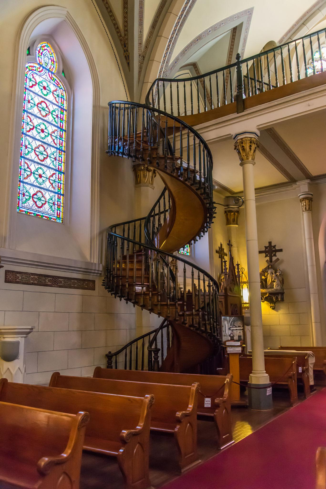
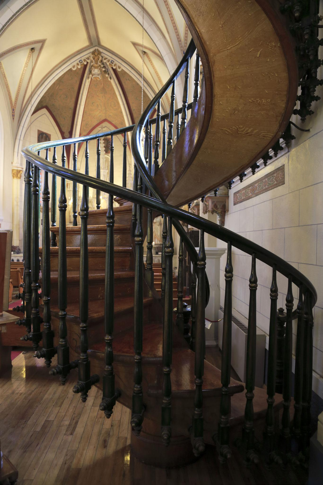

Overview
Santa Fe, New Mexico — 1878
In the late 19th century, the Sisters of Loretto faced a problem no ordinary carpenter could solve.
Their new chapel — inspired by Sainte-Chapelle in Paris — was breathtaking. But the architect died suddenly before designing a staircase to reach the choir loft twenty feet above. The space was too narrow for a traditional stairway, and adding one would block the pews.
A ladder was suggested. The nuns refused.

The Prayer
So the sisters did what they knew best: they prayed a nine-day novena to St. Joseph, patron saint of carpenters.
On the final day, a mysterious man appeared carrying only:
- a hammer
- a saw
- a square
He offered to build them a staircase.
The Carpenter
For months he worked in silence behind closed doors. No deliveries arrived. No lumber scraps were hauled in. When he finished, he disappeared without asking for payment.
What he left behind still puzzles architects.

The Staircase Mystery
The Spiral
A perfect double-helix staircase making two full turns — yet with no center pole and no visible support.
No Nails
The entire structure is held together with wooden pegs instead of iron nails.
Unknown Wood
Analysis suggests the wood’s structure doesn’t match any species native to the American Southwest.
Engineering Puzzle
For decades, carpenters have studied it. Engineers have modeled it. No one can fully explain how it supports weight — or why it still stands.
The railing was not added until later. Originally, the staircase appeared to float like a wooden ribbon.
The Disappearance
To this day, the craftsman’s identity remains unknown. The Sisters kept no record of payment, and no lumber source was documented.
Some believe he was simply an extraordinarily skilled craftsman. Others whisper it was St. Joseph himself.
It should not stand. Yet it does.
Still Standing
The staircase has survived:
- vibrations
- heavy use
- remodels
- more than 145 years of tourism
Pilgrims call it a miracle. Architects call it impossible. Visitors call it unforgettable.
In a state famous for mysteries, UFOs, ghost lights, and ancient petroglyphs…
the quiet miracle inside a small Santa Fe chapel might be the strangest of all.